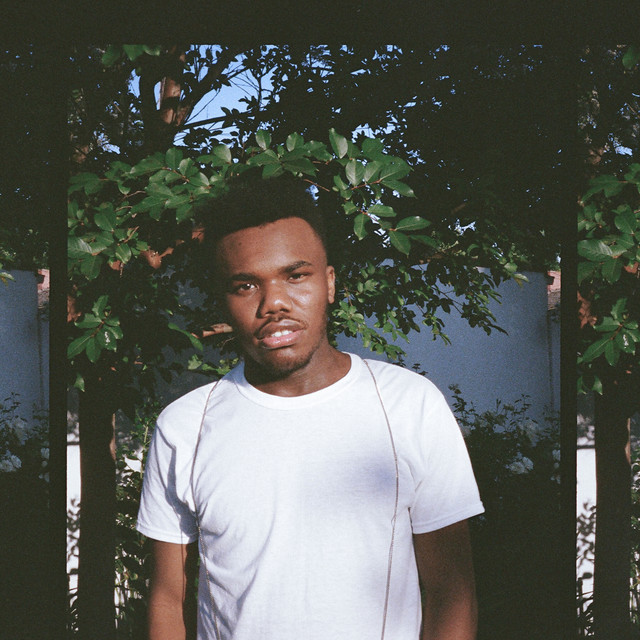
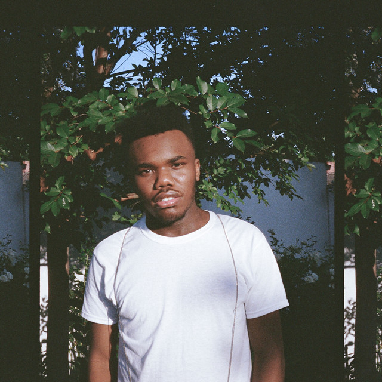
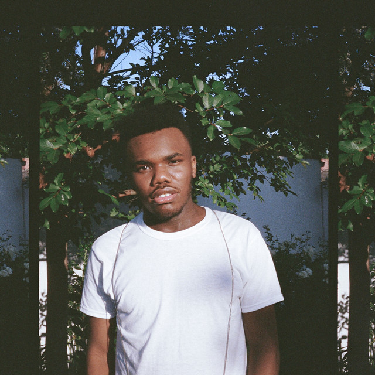

Baby Keem has upbeat music that I usually blast in the car.

Baby Keem was born Hykeem Carter in Carson, California, in the year 2000. His interest in music grew during his early life, and he was putting together his own songs by age 15.
After releasing several tracks under his own name, he took on the Baby Keem moniker in 2018 with the release of his Midnight EP. As his rap skills developed, he was also growing as a producer.
In 2018, living in Los Angeles, he co-wrote and co-produced a track on Kendrick Lamar's Black Panther: The Album, and worked on songs for Jay Rock's Redemption, which became a Grammy Award winner later that year.
Keem released another EP, Hearts and Darts,
in the summer of 2018, and followed with the mixtape The Sound of a Bad Habit in the fall. In 2019, the rapper contributed production to tracks for
ScHoolboy Q as well as a song on the soundtrack for The Lion King: The Gift.

 
